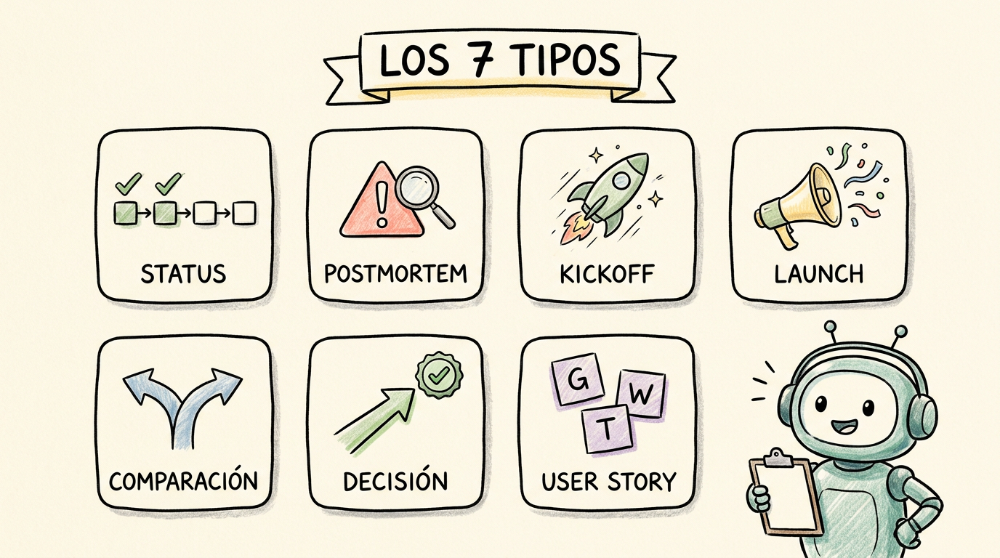
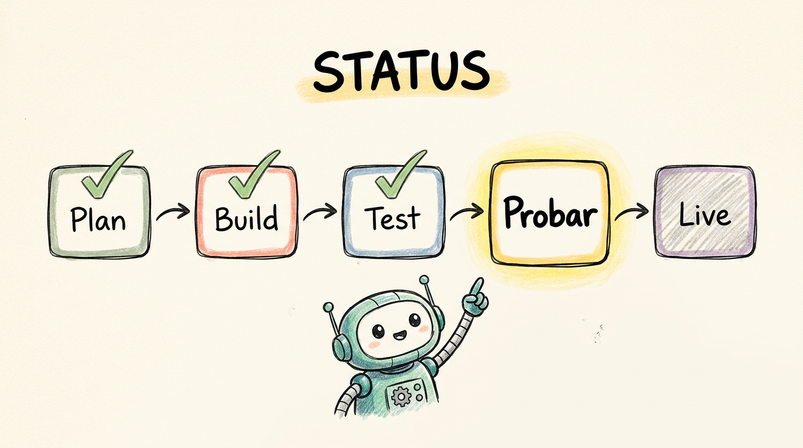
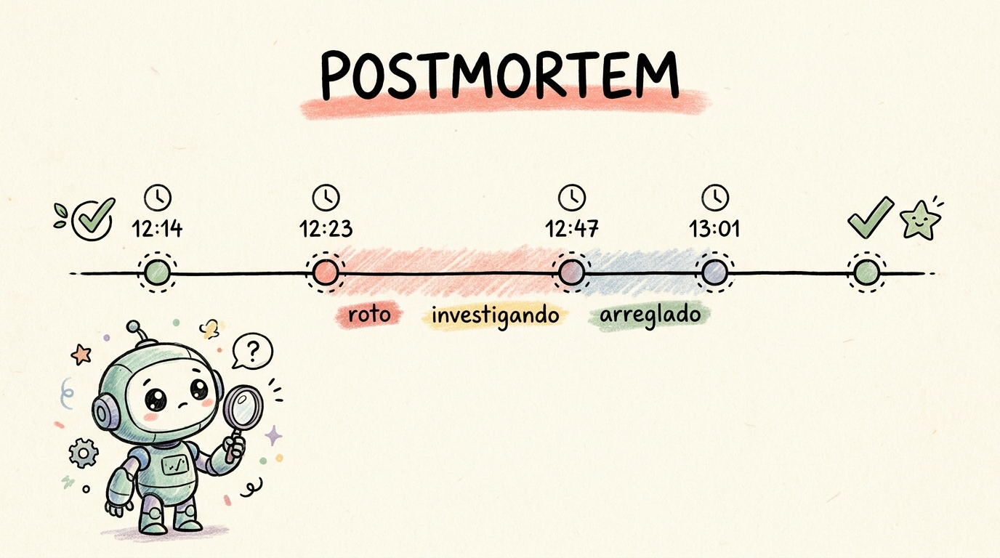
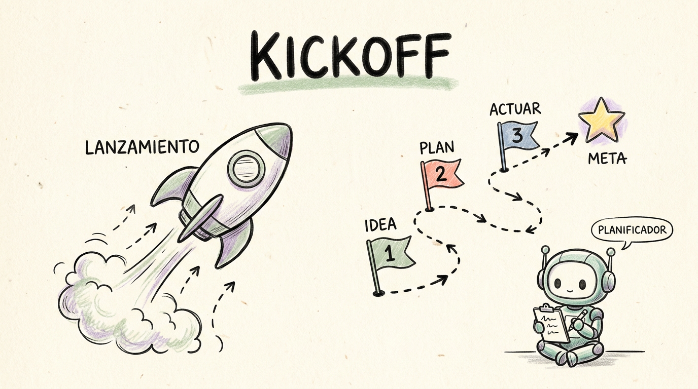
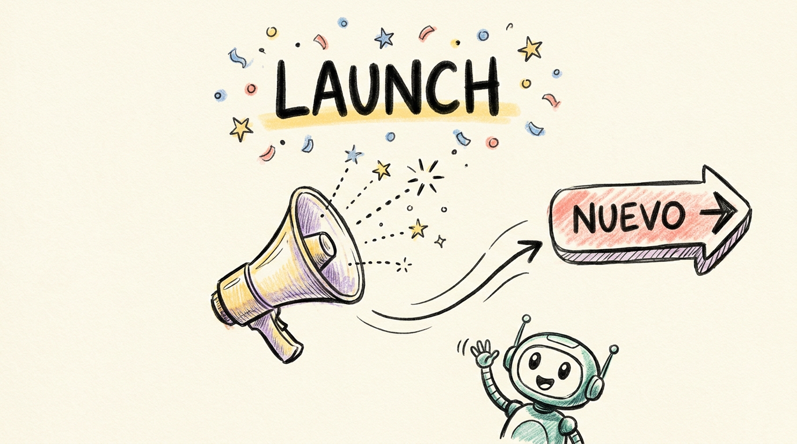
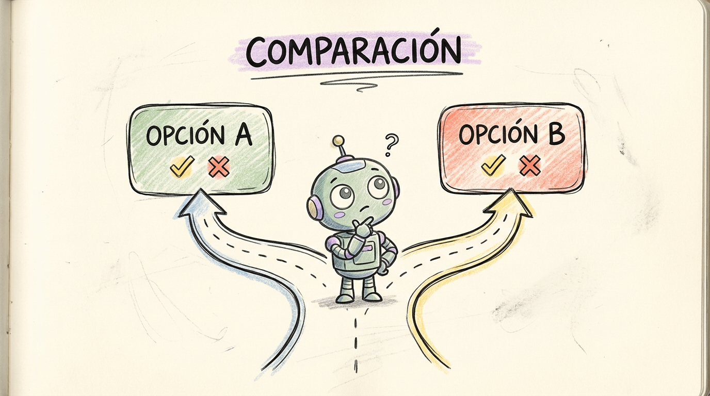
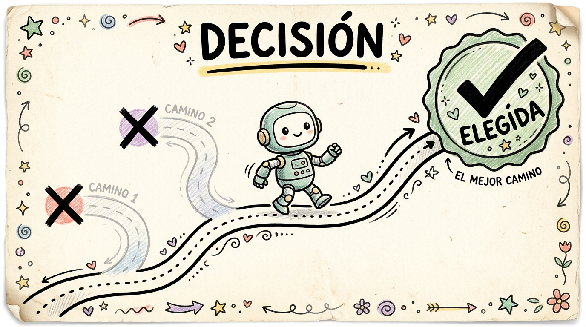
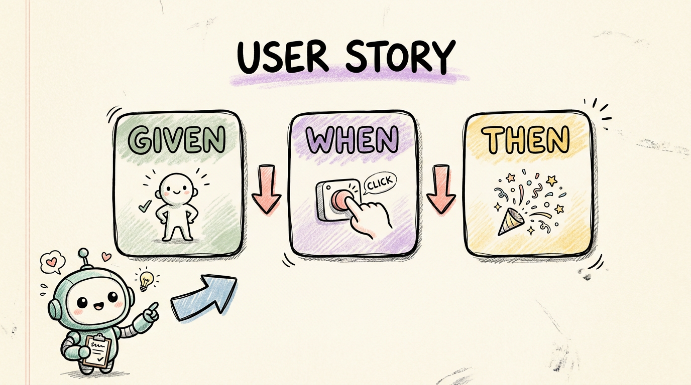

Una guía visual de los siete formatos que produce el skill visual-report-builder.
Cuándo usar cada uno, qué los diferencia, cómo se ven. Hecho para que en menos de cinco minutos
sepas exactamente qué pedirle al skill para cada situación.

Cada tipo de informe usa exactamente el mismo lenguaje visual — papel crema, dibujos hechos a mano, tipografía Outfit + Inter + Caveat — pero su estructura cambia según el problema que resuelve. Un postmortem necesita timeline; un kickoff necesita visión; una comparación necesita una bifurcación. El skill carga la receta correcta según el tipo que elijas.
tip: si no sabes cuál usar, mira la tabla de decisión justo abajo.
Empieza por la columna izquierda. Lo que describes mejor → ese es tu tipo.
| Lo que quieres comunicar | Tipo de informe |
|---|---|
| "Dónde estamos en el proyecto X" | status |
| "Algo se rompió — qué pasó y cómo lo arreglamos" | postmortem |
| "Estamos arrancando X, este es el plan" | kickoff |
| "Lanzamos X, cuéntenle al mundo" | launch |
| "¿Opción A o opción B? Ayúdenme a decidir" | comparison |
| "Decidimos X, dejándolo por escrito" | decision-memo |
| "Cuando el usuario hace X, la app debe Y" | user-story |

Necesitas mostrar el progreso de un proyecto en curso. Lo que ya está hecho, lo que sigue, los bloqueos. Es el formato del informe que hicimos del TikTok.
Es el único tipo que incluye una barra de progreso (%) en el panel ejecutivo. Lleva un pipeline horizontal como hero, con el paso actual resaltado.

Después de un incidente. Para documentar qué pasó, por qué, qué hicimos, y qué cambiamos para que no vuelva a pasar.
Lleva una línea de tiempo con timestamps y un panel de impacto en rojo. Incluye badges de severidad (Sev1/2/3).

Estás arrancando un proyecto nuevo. Hay que alinear al equipo sobre por qué lo hacemos, cuáles son los objetivos, qué está dentro y qué está fuera del alcance.
Es el único que lleva una sección de "In scope / Out of scope" con un diagrama visual. Tiene panel de riesgos + mitigaciones explícitas.

Acabas de shipping algo importante. Para anunciarlo al equipo, a stakeholders, a clientes, o a quien sea que necesite saber que esto existe ahora.
El único con tono celebratorio + un CTA grande "Pruébalo ahora". Lleva una sección de "behind the scenes" opcional con stats divertidos.

Tienes dos (o tres) opciones encima de la mesa y necesitas pesarlas para tomar una decisión. Ej: ¿Stripe o LemonSqueezy? ¿React o Vue? ¿Wise o Tipalti?
Lleva una tabla de comparación criterio × opción con ✓ en la celda ganadora por fila. Termina con una recomendación clara (no se queda en "ambas son buenas").

Ya tomaste la decisión (o el equipo la tomó). Quieres documentarla para no relitigarla después y para que el equipo entienda por qué.
La decisión aparece grande arriba, no enterrada al final. Es la diferencia con comparison: comparison todavía está decidiendo; decision-memo ya decidió.

Quieres describir un comportamiento específico de la app. Una interacción, una animación, una regla de negocio observable. Tipo: "cuando alguien cruza 1k vistas, dispara confetti".
Tiene la estructura Given / When / Then como columna vertebral en tres tarjetas. Incluye criterios de aceptación + edge cases + "fuera de alcance".
| Tipo | Para qué sirve | Característica única | Cuándo NO usarlo |
|---|---|---|---|
status | Reportar progreso | Barra de % + pipeline visual | Si todo cambió y no hay continuidad |
postmortem | Analizar un incidente | Timeline con timestamps + impacto | Si nada se rompió |
kickoff | Arrancar un proyecto | Scope visual in/out | Si ya llevas semanas en él |
launch | Anunciar algo shipped | CTA "Pruébalo ahora" | Si todavía no está en producción |
comparison | Decidir entre opciones | Tabla criterio × opción + recomendación | Si ya decidiste — usa decision-memo |
decision-memo | Documentar una decisión tomada | Decisión arriba, razones abajo | Si todavía estás decidiendo — usa comparison |
user-story | Especificar un comportamiento | Given / When / Then | Si no hay un trigger específico |
Pídele al skill que cree el informe — el modelo infiere el tipo del contexto, o pregunta si hay ambigüedad. Ejemplos reales que funcionan:
# Status report
"Hazme un status report del proyecto de pagos, audiencia non-tech, español"
# Postmortem
"Postmortem de la caída de esta mañana, audiencia engineers"
# Kickoff
"Arranquemos el proyecto Instagram con un kickoff brief, audiencia mixed"
# Launch
"Lancemos la feature de Conectar TikTok, audiencia operators"
# Comparison
"Compara Wise vs Remitly para nuestros payouts, audiencia engineers"
# Decision memo
"Documentar la decisión: vamos con single-tenant en v1"
# User story
"User story: cuando el operador cruza 1k vistas, dispara confetti"